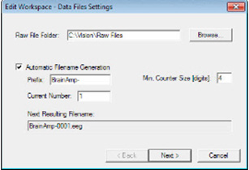

BrainVision Workspace
Workspace saves user defined settings. It also stores all the settings you make in the amplifier and configuration menus, the impedance measurement settings. You can set up multiple workspaces with different settings, and switch between these as you wish. This provides you with an easy way to access recording parameters that you use frequently.
When you create or edit a workspace the parameter settings are automatically taken from the last workspace that was opened. As a result, you may need to adapt these settings for use in the current workspace.
Pre-requisites
- An amplifier is selected
- The amplifier is connected to the recording computer
How to Open/Create the Workspace (Wizards)
Step 1: Click on File > New Workspace… or File > Edit Workspace…
Step 2: Data File Settings : to set all file related options

Amplifier Settings
The second page contains amplifier-specific parameters (1) and the channel table (2).

Filter Settings
There are 3 Filter Methods:
Raw Data Saving Filters
Filters are directly applied to the raw data. Use of this filter is not recommended, because this changes the raw data. When using BrainVision Analyzer you can apply filters to the raw data.Segmentation Filters
When you specify segmentation (subsequent tab of the workspace wizard) you can also set filters for the segmented data.Display Filters
This filter only has an effect on the display on your screen. When you set the filter, you can switch it on and off during the data display by clicking on the Display Filter button.
Segmentation / Averaging
This dialog allows you to make optional settings for segmentation and averaging.
Saving
When you click on Finish, the Save As dialog opens allowing you to save the workspace file. Give the file a meaningful name and click Save.
Electrode Position Files (EPF)
Used to assign electrode names, positions, and physical channels in a workspace using predefined data from the cap manufacturer. It gives users the opportunity to adapt the electrode position data (for example, the physical channel). The EPF is written in XML format and is saved as a .BVEF file. This can be opened and edited in a text editor. The file has the following structure (see also the Analyzer Manual):
Create Workspace Using an EPF
Pre-requisites
- An amplifier is selected
- The amplifier is connected to the recording computer
Step 1: Click on File > New Workspace… or go to the Amplifier Settings dialog (second dialog page).
Step 2: Click on Use Electrode Position File.
Step 3: Select the checkbox Read positions from Electrode Position File.
Step 4: Click on Browse and locate the electrode position file (.BVEF). (If you want to check the file, click on Preview).
Step 5:* Click on Import amplifier channel table. Recorder takes over the assignment of channel names and physical channels.
Don’t click this button if you edit an existing workspace and want to keep the channel assignment.
Step 6: Click on OK to load the electrode positions (topographies).
The electrode positions and the channel table (if applicable) are loaded into Recorder. The information is written into the header file. You can check the result in the impedance measurement window.
Load complete files (covers the channel table and electrode topography): Steps 1–6
Load electrode topography (only electrodes that are already present in the channel table): Skip Step 5